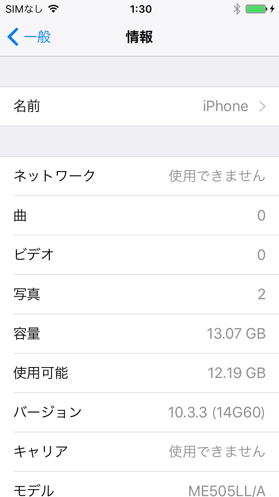
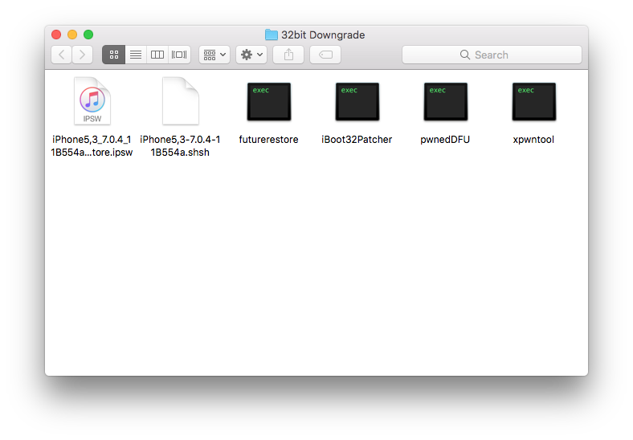
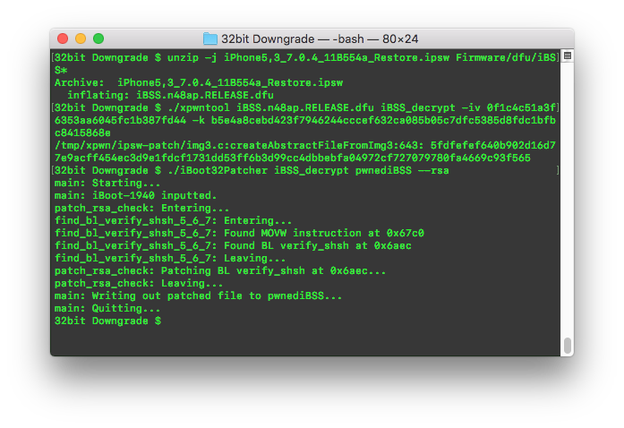
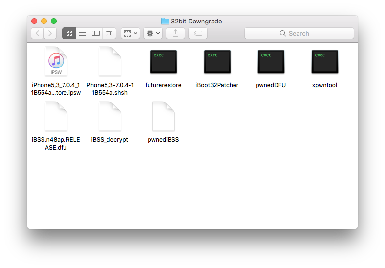
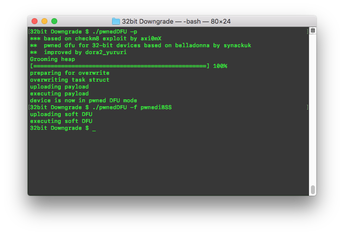
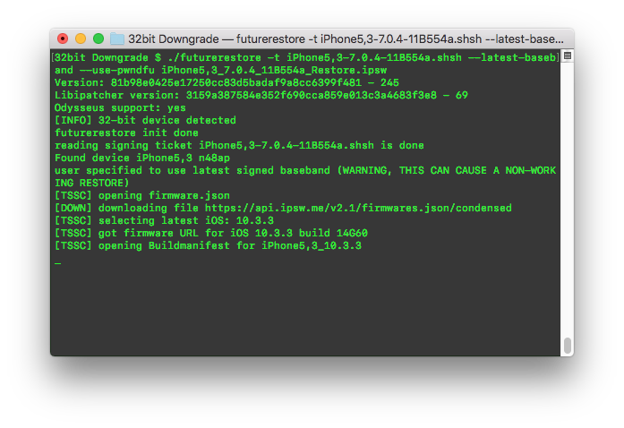
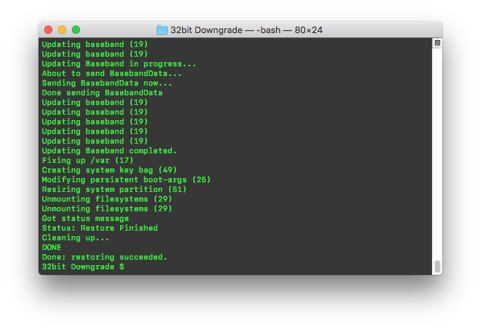
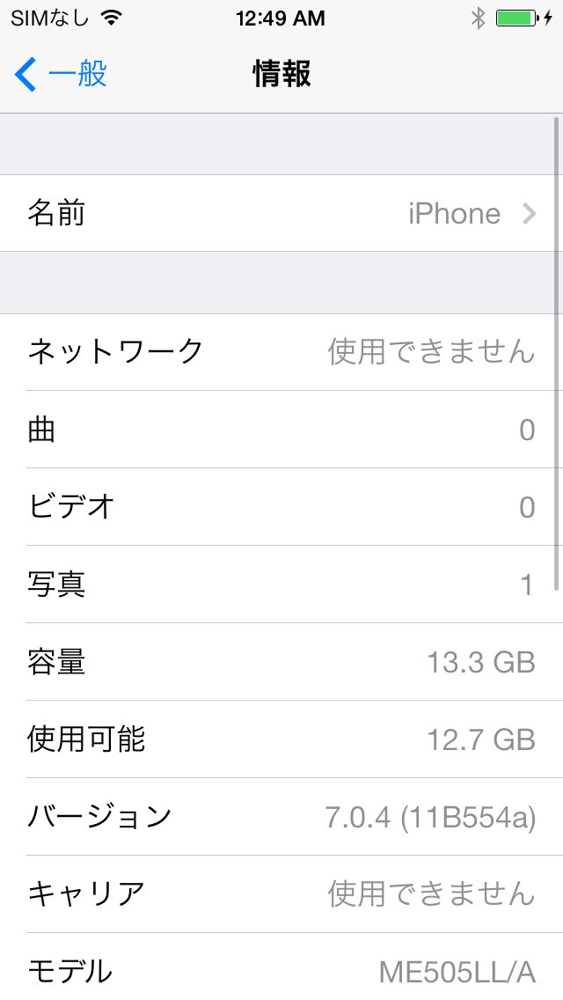

Downgrading 32bit devices with checkm8
Imported: 2026年9月22日
This is just a simple write up on downgrading 32 bit devices that are *currently* vulnerable to the checkm8 exploit. Theoretically, this method works on all 32 bit devices from A5-A6X, but only specific devices have checkm8 implemented at the moment. That will likely change in the future, as the A5 bootrom is being worked on.
The device I will be using to demonstrate is the iPhone 5C. I will be downgrading to 7.0.4 (11B554a) with shsh blobs that I dumped using Odysseus. Prior to the downgrade, I restored the phone to 10.3.3 using iTunes, but this step is entirely unnecessary.

What you’ll need:
Before downgrading, you need to download the IPSW for the firmware that you wish to downgrade to. IPSWs can be found at ipsw.me. I downloaded the 7.0.4 IPSW for the iPhone 5C. You are also going to require futurerestore, iBoot32Patcher, and xpwntool, which can be found on github. iBoot32Patcher and xpwntool might require compiling, but futurerestore can be downloaded from s0uthwest's github page (rest in peace, s0uthwes).
You're also going to require a tool to put your device into checkm8 pwned DFU mode. I use dora2-ios's tool to put your device into pwned DFU as it has proven to be stable with my multiple runs of downgrading. I will be writing about how to use ch3rryflower in a future write up about the iOS 7.x iBoot exploit.
These are the files that I had before beginning with the downgrade process.

Preparing iBSS
The first step is to extract iBSS from the IPSW file. You can unzip the whole archive and grab iBSS from the Firmware/dfu/ but the faster way is to use unzip.
Run this command to extract iBSS:
unzip -j iPhone5,3_7.0.4_11B554a_Restore.ipsw Firmware/dfu/iBSS*
Once iBSS is extracted, you're going to require the keys for the iBSS file, which can be found at the iPhone Wiki page for Firmware Keys.
Once you have the keys for the iBSS file you extracted, run xpwntool with the keys you grabbed.
./xpwntool iBSS.n48ap.RELEASE.dfu iBSS_decrypt -iv 0f1c4c51a3f6353aa6045fc1b387fd44 -k b5e4a8cebd423f7946244cccef632ca085b05c7dfc5385d8fdc1bfbc8415868e
After you run xpwntool, run the following command:
./iBoot32Patcher iBSS_decrypt pwnediBSS --rsa

The resulting file will be pwnediBSS which would usually be used to send the device into kloader DFU (kDFU) using Odysseus, but we can put the device into the same state using checkm8, thus eliminating the need to restore, install a jailbreak with tfp0 enabled, and run kloader. You can skip all of that and continue to the next steps, thus saving an enormous amount of time.
At this point, these are the files you should have.

Entering pwned DFU
Put your device into DFU mode, and connect the device into the computer. Then run the following command:
./pwnedDFU -p
Then after that finishes, run ./pwnedDFU -f pwnediBSS

If these commands fail at any point, put the device back into DFU mode, and rerun the commands. The device should be in soft dfu mode now.
Restoring
The final step is to downgrade the device. I will be using futurerestore to downgrade the device to 7.0.4. Futurerestore does not require the patching of IPSW files to downgrade the device, the patches are done by the program. You're going to need the IPSW, the corresponding shsh blob, and an internet connection. Once you have everything ready, run the following command:
./futurerestore -t iPhone5,3-7.0.4-11B554a.shsh --latest-baseband --use-pwndfu iPhone5,3_7.0.4_11B554a_Restore.ipsw

The downgrade should go successfully. Using the --latest-baseband argument in futurerestore will flash your target firmware with the latest baseband the device can support. If you want to specify an alternative baseband that is being signed, you can use -b and -p with a custom baseband and BuildManifest. The specified baseband must be signed, or else the restore will fail during the Updating Baseband (19) stage.

You're done! The device should be downgraded to your specified firmware. It is important to note that futurerestore might have difficulty locating keys for beta firmwares, which there is a work around for by creating a HTTP server with the keys, but it takes extra work.

Using Odysseus
Everything I described can be done on idevicerestore and idevicererestore, but if you choose not to use those tools, you will need to create a patched IPSW using Odysseus.
Instructions for the creation of an Odysseus IPSW and the download can be found at the official page for Odysseus.
The important thing to remember is to either add your own baseband by dumping one and adding baseband.tar to the end of the command when creating an patched IPSW, or to include to --bbupdate argument to command.
An example of an Odysseus command is:
./ipsw iPhone5,3_7.0.4_11B554a_Restore.ipsw custom.ipsw -memory -bbupdate
or if you choose to include your own dumped baseband:
./ipsw iPhone5,3_7.0.4_11B554a_Restore.ipsw custom.ipsw -memory baseband.tar